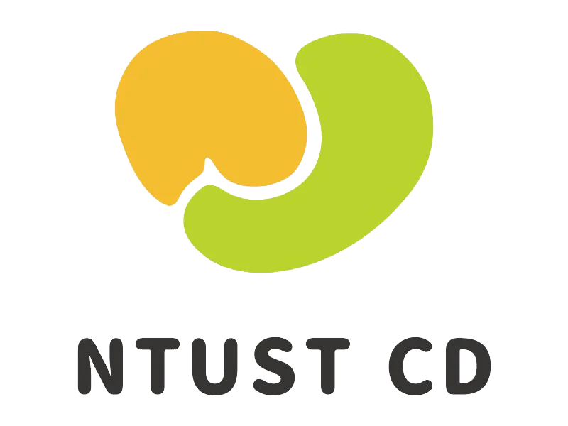
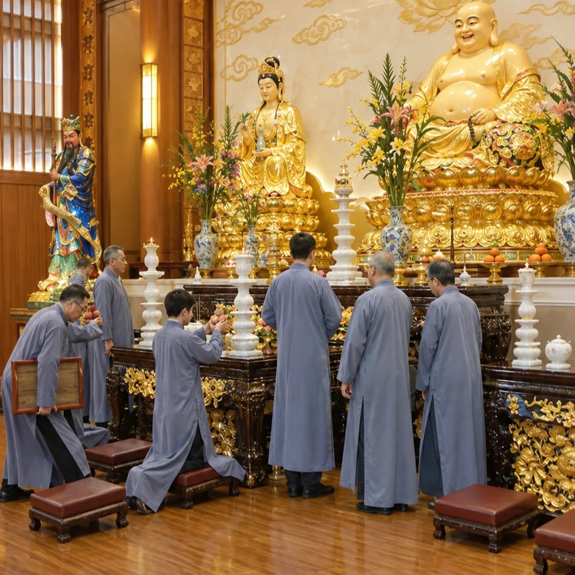

台科大崇德志工社 NTUST CHONG-DE VOLUNTEER CLUB
中華文化體驗 Chinese Cultural Experience
往下滑看活動內容 Scroll to see what's involved深入淺出介紹孔子（儒）、老子（道）、釋迦牟尼佛（釋）等歷代聖賢傳承千年的內在智慧。 An accessible introduction to the inner wisdom handed down for millennia by sages such as Confucius (Confucianism), Laozi (Taoism) and Shakyamuni Buddha (Buddhism).

- 獻供古禮：體驗如祭孔大典般莊嚴肅穆的傳統獻供儀式。 Traditional offering rite: take part in a solemn offering ceremony in the manner of the rites honouring Confucius.
- 沉浸式定心：透過沉靜的跪拜動作與專注體驗，開啟自身潛力的三樣寶藏。 Immersive stillness: through quiet kneeling bows and focused attention, open the three treasures of your own potential.
講解剛才求得的三樣智慧寶藏，並分享在日常生活、面對期中／末考壓力與挑戰時，如何實際運用它們來定心與提升專注力。 We explain the three treasures of wisdom you have just received, and share how to put them to use in daily life and under the pressure of midterms and finals, to steady your mind and sharpen your focus.
📌 注意事項📌 Good to Know
- 飲食：體驗當天需吃素一日，透過天然蔬食幫身體做個淨化。 Food: you will eat vegetarian for the whole day of the experience, letting natural plant-based food give your body a gentle cleanse.
- 穿著建議：現場儀式氣氛莊嚴，請穿著整潔便服（避免短褲、拖鞋）。 What to wear: the ceremony is formal in tone, so please wear neat casual clothing (no shorts or flip-flops).
- 信仰尊重：本活動為中華傳統文化與心境祈福體驗，尊重個人原有宗教信仰，請安心參加。 Respect for your beliefs: this is an experience of traditional Chinese culture and a blessing for peace of mind. Your own religious beliefs are respected, so please feel at ease joining.
線上報名Register
報名完成！You're Registered!
謝謝你的報名，期待在現場見到你。 Thank you for signing up. We look forward to seeing you there.
台科大崇德志工社 NTUST CDVC ・ NTUST Chong-De Volunteer Club ・ 回首頁Home